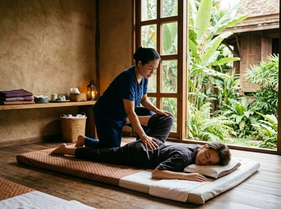

★★★★★ Quality gate failures: paragraphs. Review and edit before removing this notice. ★★★★★
Thai massage in Hyndland is a natural fit for one of Glasgow's most sought-after residential neighbourhoods.
Hyndland sits in the heart of the West End. It's a quiet, tree-lined area of red sandstone tenements and communal gardens, home to lawyers, GPs, academics, and creatives. People here invest in their wellbeing — and the demands of busy working lives make proper physical recovery a real need.
Serendipity Massage Therapy & Wellness on Hope Street is where Hyndland residents come when they want more than a quick fix. Hyndland is around three miles from the city centre and well connected. The short journey to our studio fits easily into a weekday or a relaxed weekend plan. You can book your session online in minutes and arrive at Central Chambers knowing exactly what to expect.

Professionals in Hyndland often carry the physical signs of demanding careers. Desk tension across the neck and upper back. Tight shoulders from long commutes. Low-level fatigue that builds across a busy week. A regular Traditional Thai Massage works directly on these issues. It uses assisted stretching and acupressure to release deep muscle tension and restore a proper range of movement.
Every treatment at Serendipity is delivered by a trained therapist. All techniques come from head therapist Jariya Malone. Whether you need deep therapeutic work or genuine relaxation, there is an option suited to you.
Hyndland is one of the best-connected areas in Glasgow. Getting to Serendipity at Central Chambers on Hope Street is simple. Hyndland railway station is on the Argyle and North Clyde Lines. Trains run to Glasgow Central Low Level every 15 minutes, with the journey taking around 10 to 11 minutes. Hope Street is a five-minute walk from the station.
If you prefer the bus, services from Clarence Drive run to the city centre in around 20 to 25 minutes. Our address is Floor 1, Suite 50, Central Chambers, 93 Hope Street, Glasgow G2 6LD. If you have questions before your visit, call us on 0141 673 6630.
Serendipity has built its name on one thing: consistent, high-quality treatment from a professional team. Every therapist is trained to the same standard. They use the techniques developed by Jariya Malone, drawn from traditional Thai practice and adapted to what our clients need.
For Hyndland residents who want a therapist they can rely on, Serendipity offers something important. You get a full team practice — not a sole trader, not a rotating roster of unfamiliar staff. You can book your appointment online and return to the same quality every time.
Hyndland holds a notable place in Glasgow's history. It became the first tenement conservation area in the United Kingdom. That status reflects the quality of its Edwardian red sandstone buildings. For more on the area, see Hyndland on Wikipedia.
Serendipity is at Central Chambers, 93 Hope Street, roughly three miles from Hyndland. By train from Hyndland station, the journey to Glasgow Central Low Level takes around 10 to 11 minutes. Services run every 15 minutes. Hope Street is then a short walk from the station exit.
The quickest route is by ScotRail train from Hyndland station to Glasgow Central Low Level. Trains run roughly every 15 minutes. From Glasgow Central, Hope Street is around a five-minute walk. Door to door, the total journey is comfortably under 30 minutes.
Yes. Serendipity accepts same-day bookings subject to availability. The easiest way to check is through the online booking page. You can also call the studio on 0141 673 6630 if you'd prefer to speak with someone.
Traditional Thai Massage is a strong choice for desk workers with tension in the neck, shoulders, and upper back. It uses assisted stretching and acupressure to release tight muscles and restore range of movement. Thai Oil Massage is also popular — it offers the same depth with the added benefit of warm therapeutic oils.
Serendipity offers appointments across the week, including evening slots for Hyndland residents finishing a working day in the city. For current availability, check the booking page or call 0141 673 6630.